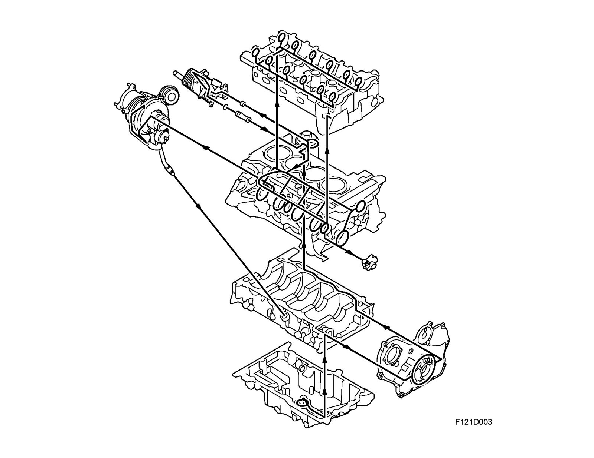
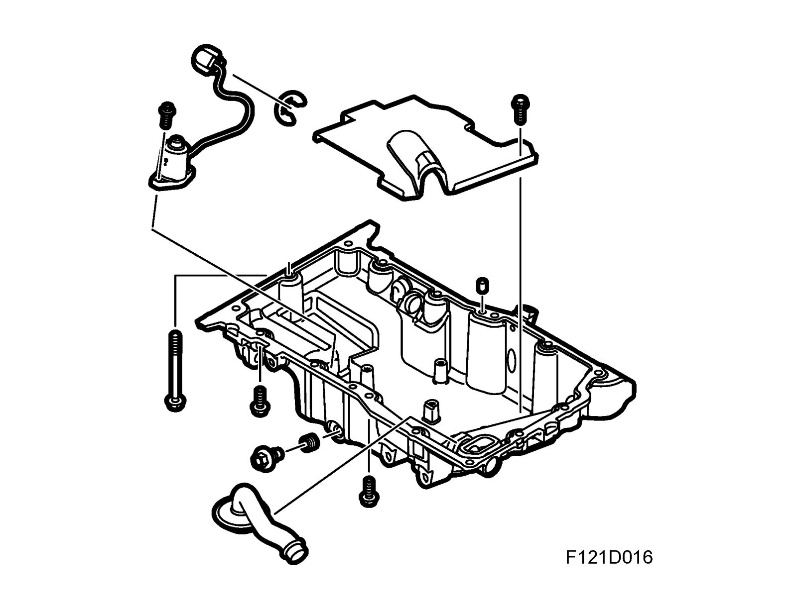
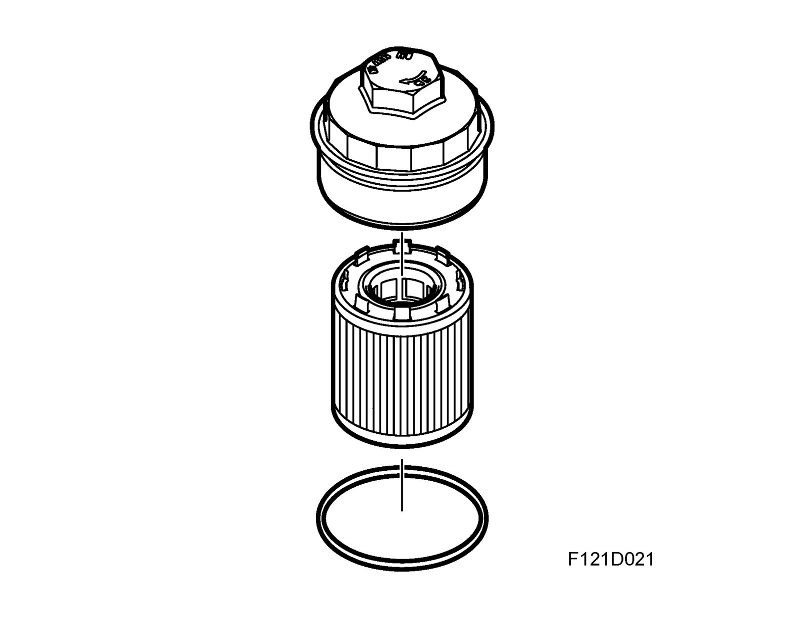

Engine Lubrication: Description and Operation
Lubricating system
The engine's lubrication is handled by a pressure lubricating system where the oil pressure is generated by a gear pump comprising one gear sprocket and one centre-displaced internal gear ring. The pump is located in the timing cover and is driven by the crankshaft.
The oil is sucked up from the sump via the strainer and suction pipe to the oil pump. A pressure reducing valve in the timing cover limits oil pressure while excess oil is lead back to the suction side of the pump. The oil is then lead via a channel in the cylinder block further on to the oil filter. The engine is equipped with an oil cooler. The oil filter adapter housing contains a thermostat, which begins to open at 107 ±2° and is fully open at 120 °C, to allow the oil to circulate through the oil cooler. After filtering and, if necessary, cooling, the oil is lead out into the main channel of the cylinder block where it then branches out to all parts of the lubricating system.
When the oil pressure becomes too low, the sensor, which is located in the main oil way, will ground the electrical circuit for the warning lamp in the main instrument unit. In the oil pan is also an Engine oil temperature sensor (243) for the oil, which indicates via SID that the oil needs to be topped up. The amount of oil then remaining in the oil pan is approx. 4 liters. The crankshaft main and big end bearings are lubricated via passageways in the block and crankshaft, while pistons and cylinder walls are lubricated by oil mist and splash in the crankcase. There is also a piston cooling nozzle fitted for each cylinder that sprays a fine jet of oil on the bottom of the piston.
The outer bearing on the exhaust side balancer shaft is supplied with oil through a drilling in the no. 1 main bearing. The inner bearing on the exhaust side balancer shaft is supplied with oil through a drilling in the no. 3 main bearing. Both balancer shaft bearings on the inlet side are supplied with oil from the main gallery. From the main gallery in the cylinder block, a rising oil way to the cylinder head also supplies oil for the camshafts and valve mechanism. Through one of the cylinder head bolt holes, oil flows through drilled passages to the camshaft bearings and valve tappets.
Oil sump

The oil sump is adapted to the cylinder block. Sealing compound is applied directly to the flat surface of the flange.
Oil filter

The oil filter is mounted on the left-hand side of the cylinder block and is accessible from above after removing the upper engine cover. The oil filter is insert type. In case the filter becomes blocked by dirt obstructing the flow of oil there is an overflow filter fitted in the top of the oil filter holder.